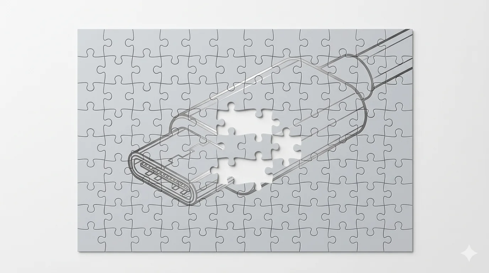

In July 2025, I published a piece arguing that the Model Context Protocol systematically overlooked four decades of hard-won lessons from distributed systems.[1] The piece made specific claims. MCP’s session model can’t scale horizontally without sticky routing. Authentication was an afterthought. JSON overhead and round-trip tool calling don’t survive production load. No cost attribution, no token counting, no protocol-level quota management. And the fragmentation that MCP aimed to prevent would still emerge — from the adopters, not the competitors.
My post drew over 50,000 views and 2,200 claps, and The New Stack cited it by name.[3] Yet the timing was not popular. LinkedIn influencers were calling MCP "USB-C for AI." Developers were shipping demo servers in an afternoon and declaring the integration problem solved. I got a lot of angry messages, the huge majority completely unsubstantiated. Was I standing in the way of juicy consulting projects?
Two months later, I walked into Europe's first MCP developer conference in Berlin and titled my talk "Missing Critical Pieces."[2] Grey-haired practitioners — the engineers who'd shipped production RPC systems, who remembered why gRPC has deadline propagation — nodded. I was saying out loud what enterprise architects were thinking, but the hype cycle wouldn't let them say: “This protocol is not production-ready.”
Eight months later, MCP won the standard war. OpenAI adopted it and signaled a move away from its own Assistants API.[4] Google DeepMind and Microsoft integrated it. Anthropic donated MCP to the Linux Foundation’s Agentic AI Foundation in December 2025, with AWS, Bloomberg, Cloudflare, Google, and Microsoft as platinum members.[5] Over 10,000 MCP servers published. Monthly SDK downloads exceeding 97 million.[6] No competing protocol came close. By every adoption metric, MCP is the standard. Credit where it’s due: MCP solved the discovery and transport problem. Getting any AI model to find and connect to any tool through a single protocol is a genuine achievement.
Then came the week of March 9–13, 2026. The companies most invested in MCP’s success confirmed claim after claim from last summer.
On March 9, the MCP project published its 2026 roadmap.[7] I wrote that you can’t horizontally scale MCP servers without sticky routing. The roadmap’s own language: Streamable HTTP — the transport that lets MCP servers run as remote services — has “stateful sessions that fight with load balancers” and “horizontal scaling requires workarounds.”[8] Enterprise readiness is listed as the fourth and final priority, described as “the least defined of the four priorities.” No Enterprise Working Group exists. No new spec version has shipped since November 2025.[9]
On March 11, Perplexity CTO Denis Yarats announced at the Ask 2026 conference that Perplexity is moving away from MCP internally.[10] Yarats cited two reasons: context window overhead and authentication friction — the same authentication gap and ecosystem fragmentation risk I had flagged.[11] The company shipped its own MCP server in late 2025. Within months, their solution was to abandon MCP in favor of a single REST endpoint with a single API key. Y Combinator CEO Garry Tan independently built a CLI instead, citing reliability and speed.[12]
On the same day, Cloudflare published a technical analysis that put a number on the overhead problem.[13] Their MCP server covers 2,500 API endpoints using two tools and roughly 1,000 tokens. A native MCP implementation exposing the same endpoints would consume roughly 244,000 tokens — more than the entire context window of most models.[14] For complex batch operations, Cloudflare’s Code Mode approach uses 81% fewer tokens than standard MCP tool calling.[15] MCP works as a discovery layer. It collapses as a production execution layer, because dumping full tool schemas into context for every interaction is a cost no production system can absorb.
The scale of the token problem only became visible when companies actually measured it — because MCP has no built-in cost attribution or token counting. Gil Feig, CTO of Merge, estimates that tool metadata overhead accounts for 40–50% of available context in typical deployments.[16] One developer reported that seven MCP servers consumed 67,300 tokens — a third of a 200,000-token context window — before any conversation began.[17] The overhead is structural: MCP requires the model to see complete tool definitions for every interaction. It cannot be patched without redesigning how MCP works.
The response to all of this is predictable: “But there’s a roadmap!”
A roadmap is not a fix. The 2026 MCP roadmap is a governance document. It describes Working Groups that will define deliverables on timelines they control. It lists priority areas, not solutions. The Enterprise Working Group doesn’t exist yet — the roadmap invites volunteers to form one.[18] The Transport Working Group is exploring “several approaches” to session handling, “with a cookie-like mechanism being one potential candidate.”[19] Exploring candidates is the language of research, not shipping. HTTP could mature slowly because the early web was patient. MCP cannot, because enterprise AI deployment timelines are measured in months, not years.
The fragmentation I predicted has arrived — from multiple directions at once. Cloudflare kept MCP for discovery but replaced its tool-calling mechanism with code generation. Perplexity abandoned MCP internally in favor of direct APIs. Block’s goose framework implemented Code Mode as an extension.[20] Anthropic itself independently explored the same code-execution pattern.[21] MCP’s defenders will say this is evolution — that Code Mode builds on MCP, not around it.[22] But replacing the core tool-calling protocol while keeping the discovery layer is not building on. It is keeping the address and gutting the house.
I have seen this gap from the other side. Full disclosure: Fortino Capital, where I’m an AI Operating Partner, acquired MEHRWERK in July 2025.[23] Their team recently built a production MCP server for mpmX, their process intelligence platform [24]. I sat with the engineer who built it. What it took: enterprise-level security and compliance that MCP does not provide, and a full back office for configuration, observability, and everything else that MCP does not specify. The gap between a demo MCP server and one you can ship to enterprise customers is months of engineering.
If you are a CTO or VP of Engineering evaluating MCP for your agentic infrastructure, use MCP for discoverable workflows, preferably local. That is what it actually delivers. For deterministic work at production scale, use function calling, direct APIs, or CLIs. The security, observability, and authorization layers that MCP does not provide will take months, not days, to build. And do not plan your timeline around the MCP roadmap. The companies that built and championed MCP are not planning their own around it either.
MCP won the standard war. Winning was the easy part. The hard part — making the standard work at production scale — is being done by everyone except the standard.
To my fellow engineers: chins up, and keep calling it before the roadmap does. That is what separates practitioners from influencers.
Notes
[1] Julien Simon, “Why MCP’s Disregard for 40 Years of RPC Best Practices Will Burn Enterprises,” July 2025.https://julsimon.medium.com/why-mcps-disregard-for-40-years-of-rpc-best-practices-will-burn-enterprises-8ef85ce5bc9b
[2] MCP Conference Berlin, September 16, 2025 — Europe’s first developer conference dedicated to the Model Context Protocol. Talk title: “Missing Critical Pieces.”https://luma.com/mcpconferenceberlin2025.
[3] Cited in Richard MacManus, “Why the Model Context Protocol Won,” The New Stack, December 18, 2025.https://thenewstack.io/why-the-model-context-protocol-won/
[4] OpenAI adopted MCP in March 2025. Multiple sources report the deprecation of the Assistants API, with a mid-2026 sunset, but no primary OpenAI announcement has been independently confirmed as of publication. See Greg Robison, “The Model Context Protocol: The Architecture of Agentic Intelligence,” Medium, December 23, 2025.https://gregrobison.medium.com/the-model-context-protocol-the-architecture-of-agentic-intelligence-cfc0e4613c1e
[5] Linux Foundation press release, “Linux Foundation Announces the Formation of the Agentic AI Foundation (AAIF),” December 9, 2025.https://www.linuxfoundation.org/press/linux-foundation-announces-the-formation-of-the-agentic-ai-foundation
[6] Anthropic, “Donating the Model Context Protocol and Establishing the Agentic AI Foundation,” December 9, 2025. Vendor-published figures.https://www.anthropic.com/news/donating-the-model-context-protocol-and-establishing-of-the-agentic-ai-foundation
[7] David Soria Parra (Lead Maintainer), “The 2026 MCP Roadmap,” Model Context Protocol Blog, March 9, 2026.http://blog.modelcontextprotocol.io/posts/2026-mcp-roadmap/
[8] Paraphrased from the roadmap and the MCP Transport Working Group post. The roadmap states that running Streamable HTTP at scale “surfaced a consistent set of gaps: stateful sessions fight with load balancers, horizontal scaling requires workarounds.”http://blog.modelcontextprotocol.io/posts/2025-12-19-mcp-transport-future/
[9] Per the 2026 roadmap: “MCP’s current spec release came out in November 2025. We haven’t cut a new version since.”
[10] Denis Yarats, CTO of Perplexity, at Ask 2026 conference, March 11, 2026. Reported in multiple outlets; no official transcript or recording located as of this writing. All coverage is secondhand.
[11] Sophie Zhang, “Perplexity CTO Moves Away from MCP Toward APIs and CLIs,” Awesome Agents, March 11, 2026. Perplexity’s Agent API — a single REST endpoint supporting models from six providers — launched in general availability February 2026.https://awesomeagents.ai/news/perplexity-agent-api-mcp-shift/
[12] Garry Tan’s CLI preference cited in the same Awesome Agents report and in the Versalence analysis. No primary Tan source located.
[13] Cloudflare published two related posts. The original: “Code Mode: the better way to use MCP,” September 26, 2025. The expanded follow-up: “Code Mode: give agents an entire API in 1,000 tokens,” March 11, 2026.https://blog.cloudflare.com/code-mode-mcp/
[14] Per the Cloudflare MCP GitHub repository: “The Cloudflare OpenAPI spec is 2 million tokens. Even with native MCP tools using minimal schemas, it’s still ~244k tokens.” Note “minimal schemas” — this is the best-case native MCP estimate, not worst-case. The Code Mode server covers the same API surface in approximately 1,000 tokens.https://github.com/cloudflare/mcp
[15] 32% reduction for simple tasks and 81% for complex batch operations. Demonstrated by Rita Kozlov, VP AI and Developers at Cloudflare, at MCP Night: The Holiday Special, December 2025. Vendor-demonstrated benchmarks.https://workos.com/blog/cloudflare-code-mode-cuts-token-usage-by-81
[16] Gil Feig, CTO of Merge. Cited in Versalence, “Long Live MCP: Why the Model Context Protocol Is Facing an Evolution in 2026.”https://blogs.versalence.ai/mcp-model-context-protocol-evolution-2026
[17] Developer-reported figure (7 MCP servers, 67,300 tokens, 33.7% of 200K context). Same Versalence source. Anonymous; treat as illustrative, not definitive.
[18] Per the 2026 roadmap: “A dedicated Enterprise WG does not yet exist. If you work in enterprise infrastructure and want to lead or join one, the Working Groups page explains how to get started.”
[19] MCP Transport Working Group, “Exploring the Future of MCP Transports,” December 19, 2025.http://blog.modelcontextprotocol.io/posts/2025-12-19-mcp-transport-future/
[20] Block/goose implemented Code Mode in v1.17.0, December 2025.https://block.github.io/goose/blog/2025/12/15/code-mode-mcp/
[21] Cloudflare’s March 2026 blog post states: “Anthropic independently explored the same pattern in their Code Execution with MCP post.” Primary Anthropic source not independently located as of publication.
[22] Block’s goose team explicitly published “Code Mode Doesn’t Replace MCP” (December 21, 2025), arguing that Code Mode still uses MCP under the hood and that the protocol remains the discovery and transport layer. This is accurate — and that is precisely the point.https://block.github.io/goose/blog/2025/12/21/code-mode-doesnt-replace-mcp/
[23] Fortino Capital, “Fortino Capital Acquires MEHRWERK to Accelerate Open Platform Innovation and AI-Driven Process Intelligence,” July 8, 2025.https://www.fortinocapital.com/news/fortino-capital-acquires-mehrwerk-accelerate-open-platform-innovation-and-ai-driven-process
[24]mpmx.ai